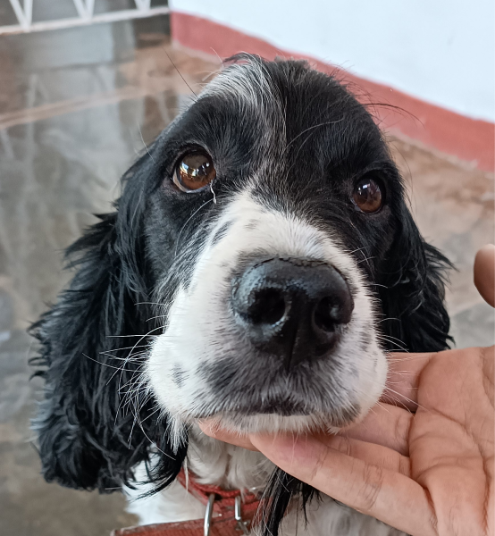
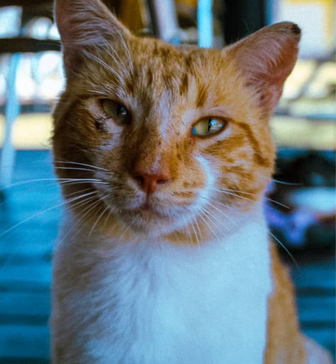
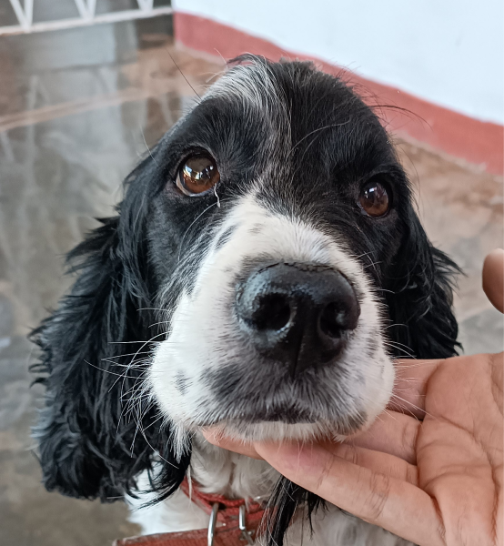
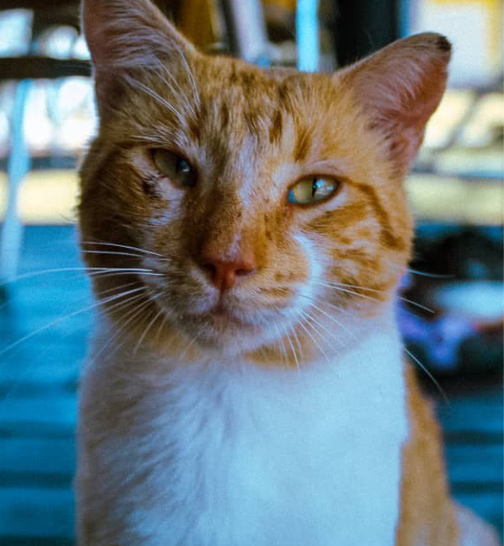

Adopt
If you happen to like any of these lovely pets and want to meet them better, just remember their name and go to the Contact page to fill out our form. We will then contact you shortly about further steps.
 



Age: 2 years Gender: Male Size: Medium Character: Gentle, Sociable, Calm Status: In shelter
Age: 4 years Gender: Male Size: Medium Character: Intelligent, Alert, Friendly Status: In foster care
Age: 6 years Gender: Female Size: Medium Character: Social, Playful, Friendly Status: In shelter
Age: 10 years Gender: Male Size: Big Character: Friendly, Loyal, Energetic Status: In foster care
Age: 9 years Gender: Female Size: Small Character: Calm, Affectionate, Laid-back Status: In foster care
Age: 1 year Gender: Male Size: Medium Character: Curious, Tender, Active Status: In shelter